Na sprzedaż przestronne 3 pokojowe, parterowe mieszkanie na osiedlu Wilno o powierzchni 66,4m2. Gotowe do zamieszkania nie wymaga żadnego wkładu finansowego.
Nieruchomość składa się z:
- przestronnego salonu z w pełni wyposażonym aneksem kuchennym (duża zmywarka 60cm, piekarnik, płyta indukcyjna, lodówka oraz TV w salonie) i wyjściem na loggie o powierzchni 7,1m2
- pokoju dziecięcego
- sypialni z wyjściem na drugą loggie o powierzchni 10,4m2
- łazienki z pralką, wanną oraz deszczownicą
Mieszkanie znajduje się w bloku przy mało ruchliwej ulicy Ponarskiej z początkowych etapów osiedla gdzie deweloper zadbał o większe przestrzenie między budynkami zapewniając komfort dla mieszkańców. Ekspozycja na południe i zachód sprawia, że wewnątrz jest bardzo jasno i przyjemnie. Loggie oraz okna oddzielone są od ulicy i patia wewnętrznego zadbaną zielenią dającą dużo prywatności. W mieszkaniu znajdują się 3 pojemne szafy w zabudowie.
Nowe osiedle z dużą ilością zieleni i dobrze rozwiniętą infrastrukturą oraz niską zabudową. Jest bardzo dobrze skomunikowane z resztą Warszawy, dzięki własnej stacji kolejki dojazd do Dworca Wileńskiego zajmuje jedynie 4min.
Do mieszkania przynależy miejsce postojowe w garażu podziemnym płatne dodatkowo 40.000zł.
Zapraszam do kontaktu. Ogłoszenie bezpośrednio od właściciela, pośrednikom dziękuję.
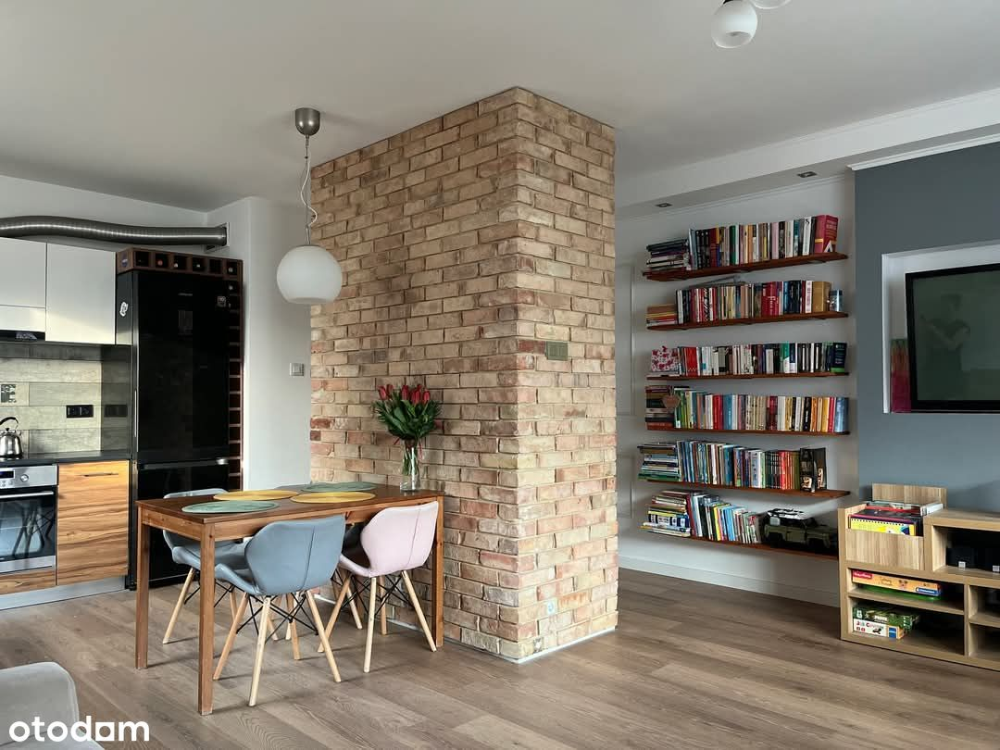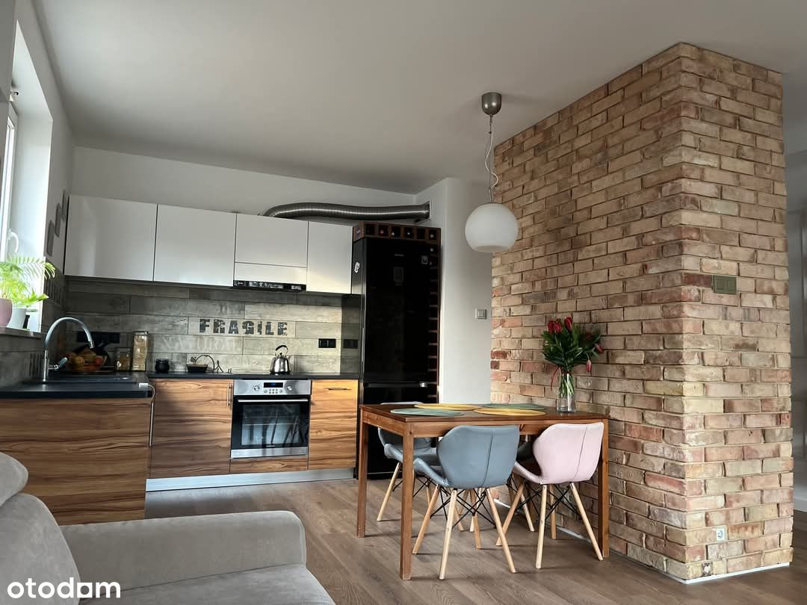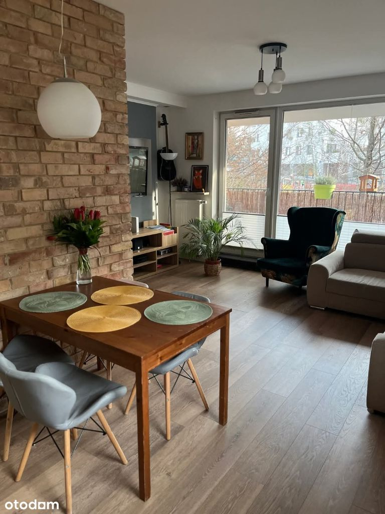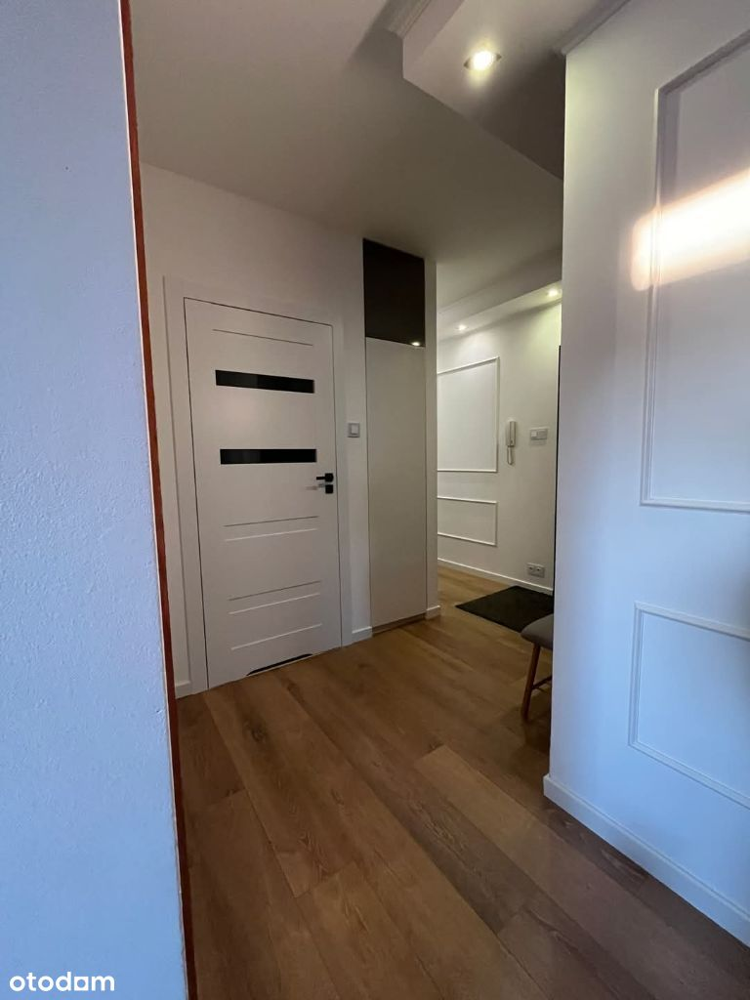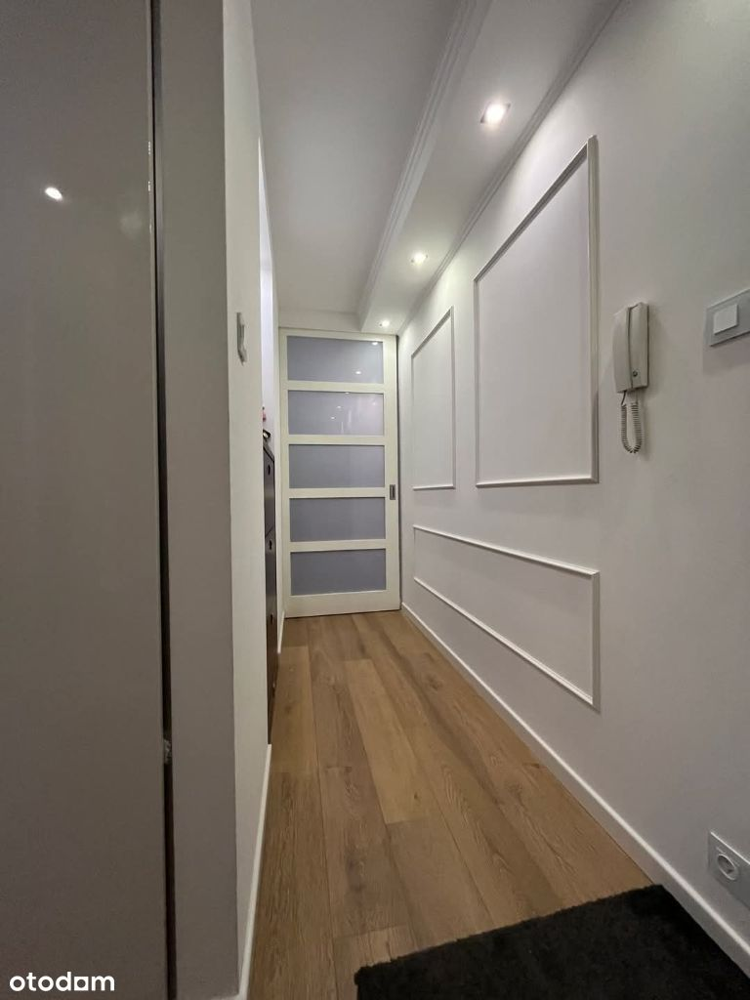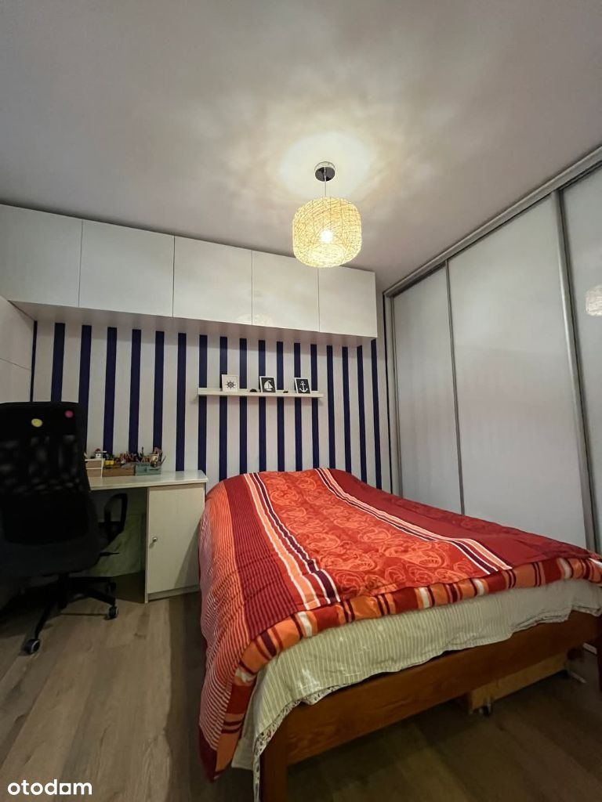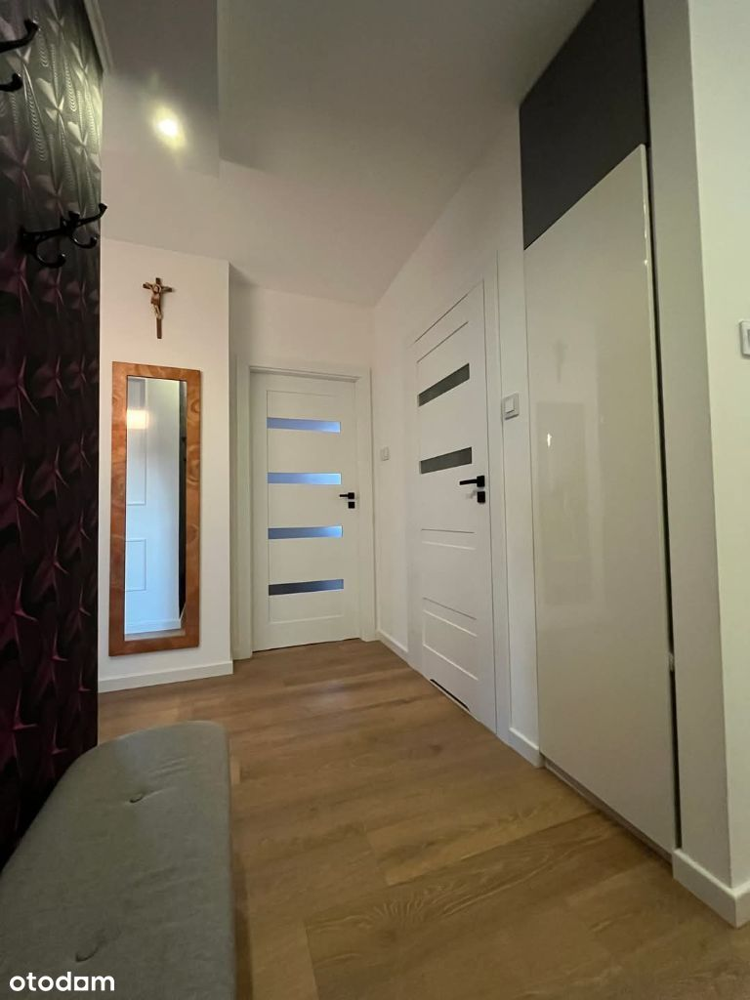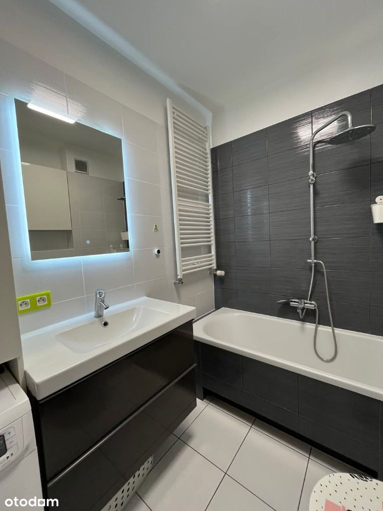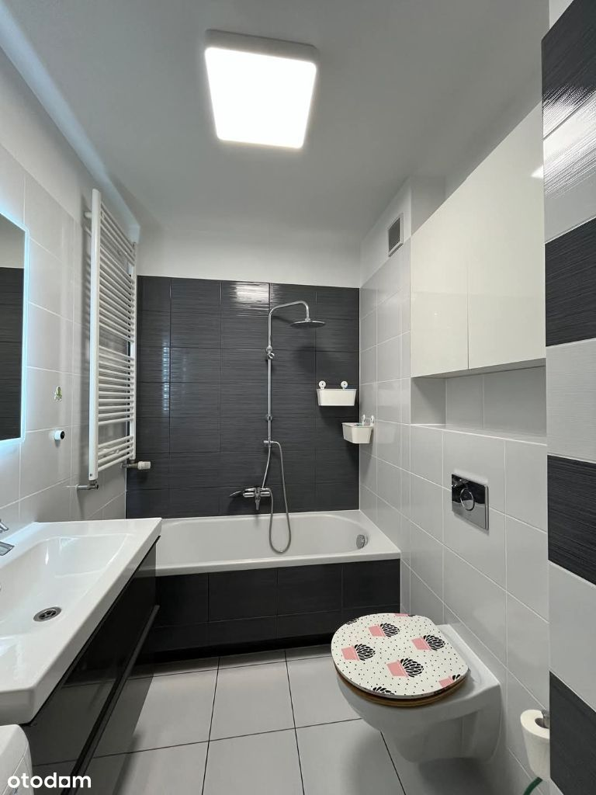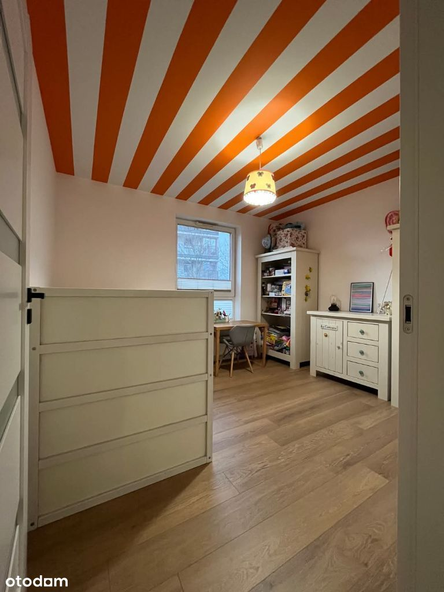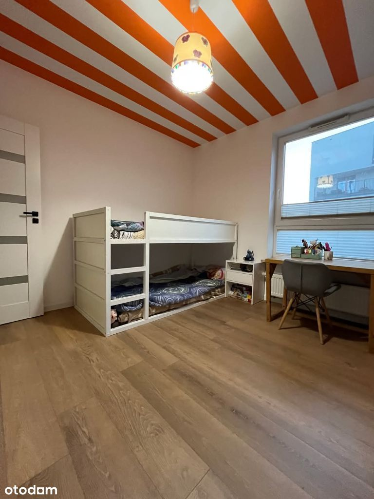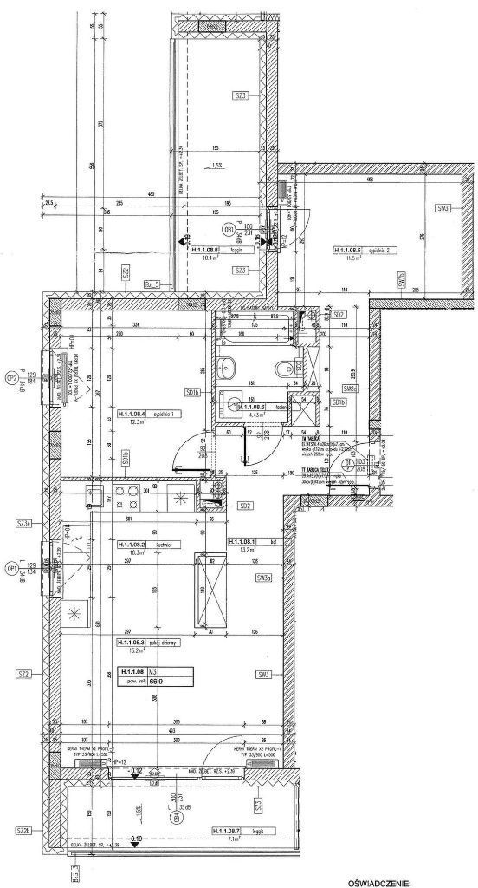